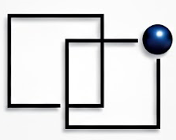

Productizing Operations for Modern AI Enabled Work
This site brings together leadership experience, advisory roles, and an operating perspective shaped by building and scaling complex organizations. The focus centers on treating Operations as a Product, something deliberately designed, built, and evolved over time, not just managed.

Context
Most of the experience represented here centers on building teams, scaling platforms, and navigating growth in complex environments. That background shows up through executive roles, advisory engagements, and hands-on operating. This site pulls those threads together and reflects how that experience applies today.

Areas of focus
Current efforts span executive leadership roles, advisory and consulting engagements, and coaching for leaders operating in complex environments. Across all of it, the emphasis stays consistent: building durable operating systems, aligning teams, and turning strategy into execution that holds up under real-world pressure.
How it shows up
The approach is practical, structured, and grounded in real operating experience. Preference leans toward clarity over noise, systems over heroics, and progress over perfection. The goal is not theory, but outcomes that last.